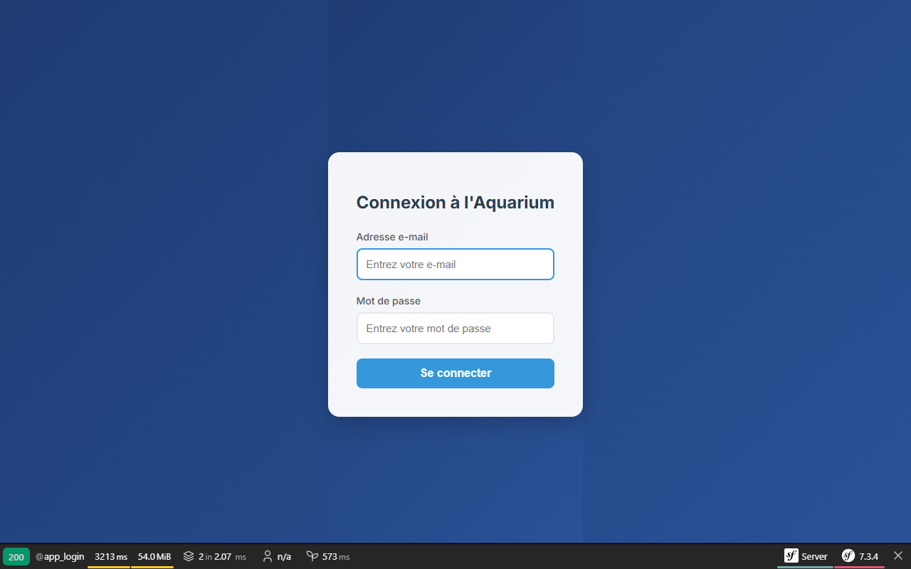
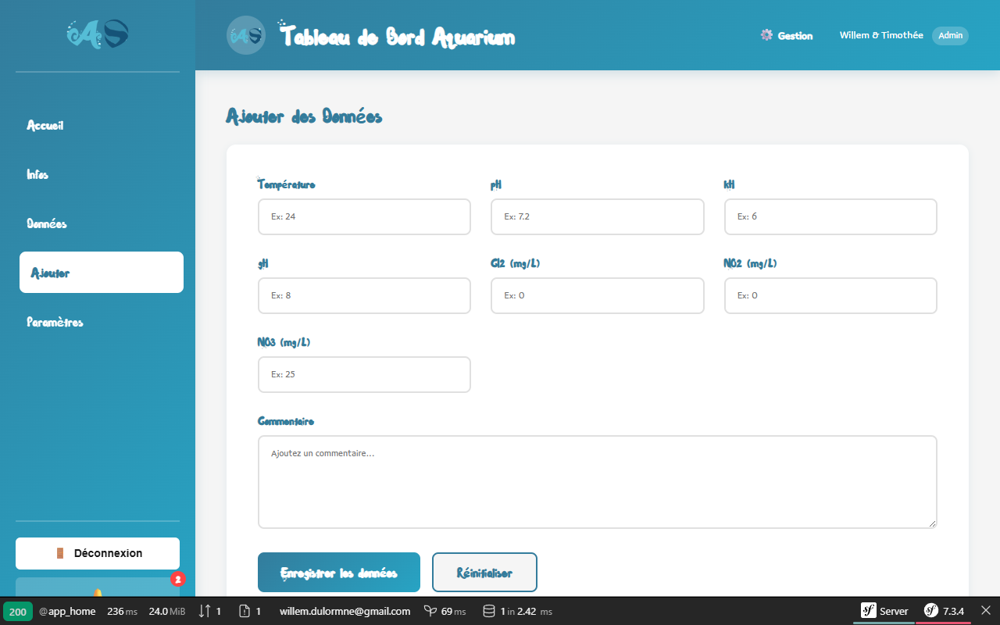
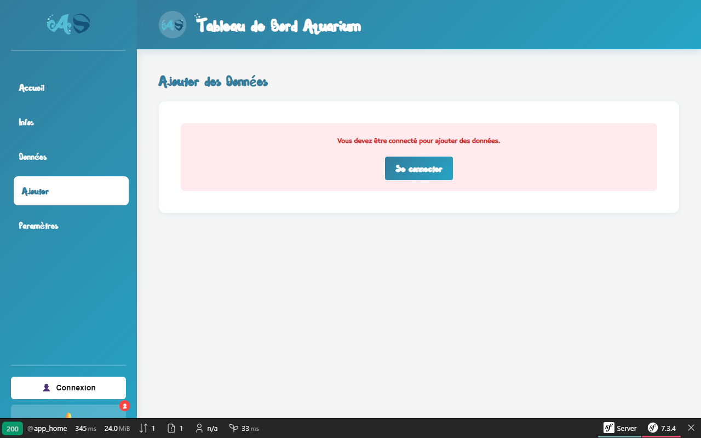

Tableau de bord
Tableau de bord

Connexion
Saisie (Connecté)
Saisie (Anonyme)AquaSite • Symfony & D3.js
Discipline : Développement Web Full-Stack & Conception UI/UX • BUT MMI S3 & S4 (SAE)
b. Le Brief Client
AquaSite est une application web métier réalisée en collaboration directe avec des étudiants et enseignants-chercheurs de la filière Génie Biologique (GB) de l'Université. La demande consistait à concevoir un outil robuste simplifiant et fiabilisant la saisie, l'archivage et l'analyse visuelle des relevés physico-chimiques (température, pH, nitrites, etc.) de leurs aquariums d'études.
c. Le Processus Créatif
1. Ateliers de Co-conception (Agilité)
Rencontres avec les biologistes pour appréhender leurs méthodes de travail en laboratoire, définir les seuils d'alertes par espèce et modéliser le parcours utilisateur idéal.
2. Architecture MVC & Sécurisation (Back-end)
Modélisation MySQL sous Docker. Conception du back-end sous Symfony, développement du système d'authentification robuste et mise en place des restrictions par rôles (Guard / Voter).
3. Visualisation de Données interactive (D3.js)
Développement d'une API REST Symfony retournant les relevés au format JSON. Intégration de D3.js côté client pour dessiner de superbes graphiques temporels interactifs mis à jour en temps réel.
d. La Proposition (Livrable)
La proposition finale est une application web métier, réactive et ergonomique, dotée d'un tableau de bord clair-obscur ultra-moderne facilitant la détection immédiate des anomalies d'eau. La galerie interactive ci-dessus présente des captures d'écran réelles de l'application en production.
Voir le projet sur GitHubNécessite la CLI Symfony pour fonctionner en local.
e. Résultat & Auto-Évaluation
L'outil est plébiscité par la filière Génie Biologique : il élimine définitivement les erreurs de saisie sur papier et offre un suivi statistique instantané des écosystèmes d'études.
Auto-évaluation des Compétences (BUT 2 MMI)
Cette réalisation majeure valide mes compétences du pôle Développement Web & Dispositifs Interactifs. J'ai prouvé ma capacité à structurer une application MVC complexe sous Symfony, à configurer des workflows de sécurité stricts (rôles), à manipuler des volumes de données structurées et à les valoriser visuellement avec D3.js pour répondre à un besoin scientifique concret.